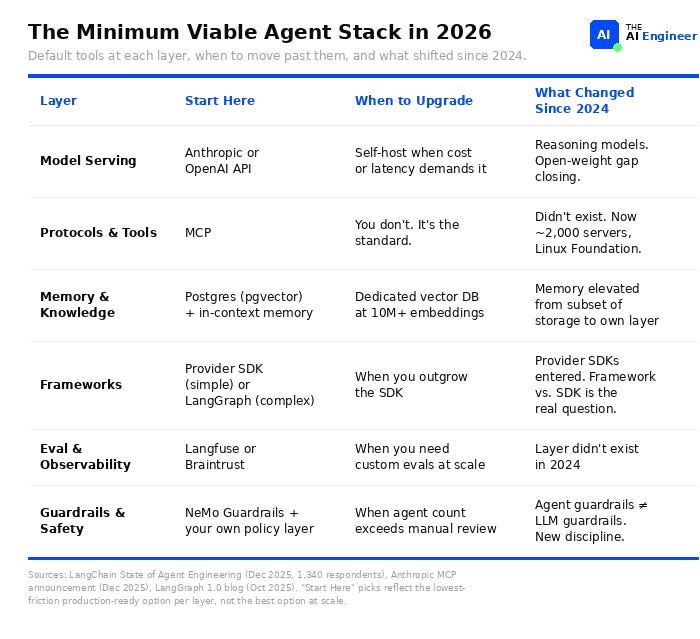

O'REILLY RADAR · 深度整理
🧱 AI Agent 技术栈(2026 版)
在你的 LLM 和一个真正能上生产环境的 Agent 之间,隔着六层基础设施。这篇文章逐层拆解:每层是什么、2024 到 2026 发生了什么、以及最重要的——你的项目到底需要哪几层。
作者 Paolo Perrone · 2026-06-08 · 原载于 The AI Engineer Substack,经授权转载于 O'Reilly Radar · 原文约 17 分钟阅读
📌 01 · 为什么要重画这张图
一个真实的过度设计案例 + 一张过时了 14 个月的参考图
文章开篇讲了一个典型场景:你的团队为一个客服聊天机器人 选了 LangGraph。三周之后,你们已经搭出了一张有 14 个节点的状态图 、一个往 Redis 写数据的自定义 checkpointer,还有一套为「一周才失败一次」的工具调用准备的重试逻辑。而这个 Agent 做的事情是:回答退款问题,调用一个 API。
作者的判断很直接:一个基于 OpenAI SDK 的 50 行脚本,外加两个 MCP server,就能做到同样的事。 问题出在哪?——没有人事先梳理过这个问题真正需要哪几层基础设施 。
再看参考系的问题。2024 年 11 月,Letta 发布了一张 AI Agent 技术栈图,后来成了作者接触的工程团队里约一半人的默认参考——如果你在 LinkedIn 上刷到过、或在 Slack 频道里见人钉过一张「Agent 分层图」,大概率就源自那篇文章。
但那张图到写作时已经 14 个月 了,期间变化巨大:
🔌 当时 MCP 还不存在 ; 🧠 记忆(Memory)还被当成向量数据库的附属品 来处理; 📦 还没有任何厂商在出官方原生的 Agent SDK ; 📏 评估(Eval)压根不在图上 。
🎯 这篇文章要做的事 2026 年的技术栈有六层,其中至少三层在 Letta 画原图时还不是独立品类。所以作者选择从零重画一张——这就是「2026 版」。

原文配图 · 2026 年的最小可行 Agent 栈(The minimum viable agent stack in 2026) · 出处:
O'Reilly Radar 原文 ⚡ TL;DR(原文的一句话结论) 文中给出了一张「最小可行 Agent 栈」作为起点,核心原则是:先用最小栈起步;只在某个具体的东西坏掉时才增加复杂度,而不是提前堆料。
🗺️ 02 · 我们到底在画什么
先定义原子单位:think–act–observe 循环;再划清边界:Agent 栈 ≠ LLM 栈
在画栈之前,先回到一个循环。作者在其早前文章《What Is an AI Agent?》中把 Agent 定义为 think–act–observe(思考–行动–观察)循环 :模型对任务进行推理,采取一个行动(调用工具、写入记忆),观察结果,然后循环往复,直到任务完成。这个循环是原子单位 ——本文讲的所有东西,都是让这个循环能在生产环境中可靠、规模化运转的基础设施。
🚧 Agent 栈不是 LLM 栈
一个聊天机器人 需要的是推理服务,可能再加上 RAG。而一个 Agent 需要的是:跨多步执行的状态管理 、由协议约束的工具访问 、跨会话持久化的记忆 、自主推理循环 ,以及实时约束行为的护栏 。作者强调:这是一组从根本上不同的基础设施问题 。
边界说明:本文映射的是「你的 LLM 与生产级 Agent 之间的六层」,不覆盖 训练基础设施、数据管线、模型微调——那些是相邻的栈。RAG 在作者的 Issue #5 里已深入讲过,本文只是拉远镜头,展示 RAG 在大图景里的位置。
🔄 2024 → 2026:重画地图的三件事
MCP 标准化了工具连接 整个「工具层」都是因它而生的新品类。 推理模型改变了 Agent 的自主能力边界 单次推理调用的 Agent 开始取代一部分多步链条。 记忆成为一等公民的架构原语 不再是「拴在向量数据库上的事后补丁」。
⚖️ 03 · 评估每一层的三个问题
全文的分析框架:每一层都用这三把尺子量一遍
在每一层做技术选型时,作者建议问三个问题:
问题 ①
🧳 需要管理多少状态?
一个无状态的工具调用器,和一个跨会话持续学习的 Agent,是两种不同的工程问题。状态管理最难的层(记忆、框架)正是大多数团队卡住的地方。
问题 ②
🔒 能容忍多少厂商锁定?
MCP 是开放标准,厂商 SDK 不是。每一个工具选择,都在增加或减少你下一次迁移的痛苦程度。
问题 ③
🕳️ 从 demo 到生产有多难?
有的层(模型服务)几乎没有鸿沟,有的层(评估、护栏)鸿沟巨大。你在哪一层最能感受到这条鸿沟,就该最先投资哪一层。
🧭 阅读顺序 下面按自底向上 的顺序过这六层:从最稳定的一层开始,到最不成熟的一层结束。
🖥️ 04 · 第 1 层:模型与推理(Models & Inference)
怎么运行驱动 Agent 的那个模型:调 API、用托管开源权重服务,还是自建部署
这一层的变化「语气大于实质」 。两件事改变了格局:
其一,推理模型 (reasoning models)——o1、o3、DeepSeek R1、带扩展思考(extended thinking)的 Claude——改变了 Agent 能规划和执行的边界:以前需要多步链条才能解决的问题,现在一次推理调用就能解决 。
其二,开源权重模型 (open weight)——Llama 3.3、DeepSeek V3、Qwen 2.5——大幅缩小了质量差距,「永远用最大的闭源模型」不再是默认建议。正在形成的模式是:用闭源模型做原型,用开源权重模型上生产 。
💬 作者的诚实结论(The honest take) 这一层正在商品化 。模型之间的差异一个季度比一个季度更不重要。真正的决策是成本与延迟的权衡 ,而不是哪个模型「最聪明」。
状态管理
无
API 调用是无状态的:发请求、收响应,没有东西需要管理。
锁定风险
闭源高 / 开源低
闭源 API 风险高——每个模型的推理方式不同,换厂商意味着重新调 prompt、适应不同的失败模式、重跑整套评估。开源权重风险低——换模型、留基建。
demo→生产鸿沟
全栈最小
你 demo 里的 API 调用和生产里的 API 调用是同一个调用。
🏠 什么时候该自建(self-host)? 当你的 Agent 调用量大到 API 定价难以为继,或者你需要 API 往返延迟给不了的 100 毫秒以内 响应时。
🔌 05 · 第 2 层:协议与工具(Protocols & Tools)
Agent 怎么调用外部工具和 API:MCP server、浏览器自动化,或 agent 间协议
这一层在 2024 年根本不是一个独立品类 ——当时每个框架都有自己的一套工具定义 JSON schema。现在 MCP (Model Context Protocol)已经是标准:
📈 SDK 月下载量 9700 万 ; 🤝 被 OpenAI、Google、Microsoft 采纳; 🏛️ 已捐赠给 Linux 基金会 。
与此并行,Browser Use (浏览器自动化)爆发式增长——不到一年拿下 7.8 万 GitHub star ;而 2024 年还没有任何人把浏览器 Agent 放到生产环境。
Agent 之间也开始互相对话了:IBM 推出了 ACP,Google 推出了 A2A 。两者都还不是标准,但它们要解决的问题(Agent 与 Agent 的协作)真实存在且在增长。
⚠️ 安全是这层的未解难题 Endor Labs 分析了 2,614 个 MCP server ,发现 82% 存在路径遍历(path traversal)风险 、67% 存在代码注入(code injection)风险 。
💬 没接触过这两类漏洞?点这里换种说法 这是帮助理解的增补,非原文内容:「路径遍历」大意是攻击者诱导程序去读写本不该被访问的文件路径(比如借 ../../ 之类的相对路径爬出授权目录);「代码注入」大意是把恶意代码混进输入,让系统当成正常指令执行。放在 MCP 场景下:一个工具服务器如果不校验输入,Agent 帮攻击者「动手」的风险就是真实的。
💬 作者的诚实结论 协议之争已经结束,MCP 赢了 。剩下唯一的问题是:在有人利用漏洞之前,你怎么把自己的 MCP server 锁牢。
状态管理
不存在
Agent 调工具、拿响应、结束。没有会话,调用之间没有记忆。
锁定风险
低
MCP 是开放标准:你建好的 MCP server,任何兼容 MCP 的 Agent 都能用。
demo→生产鸿沟
中
demo 里的 MCP server 一直能跑——直到有人发来一条恶意的工具描述。安全与治理就是这条鸿沟 。
🧩 一个重要的边界 MCP 标准化的是「Agent 怎么用工具」,它完全没有规定「Agent 之间怎么对话」 。ACP 和 A2A 想解决这个问题,但都还没达到临界规模。如果你今天就需要多 Agent 协调,你只能自己在框架层造 。(作者在 Issue #4 深入讲过 MCP。)
🧠 06 · 第 3 层:记忆与知识(Memory & Knowledge)
Agent 怎么存储和检索它知道的东西:上下文内状态、向量检索,或跨会话持久记忆
2024 年,「记忆」的意思就是「挑一个向量数据库,然后做 RAG」 。2026 年,记忆是一个一等公民的架构原语,分成三个明确的层级(tier) ,而三个层级最终都汇入同一个地方:Agent 每次调用时看到的上下文窗口 。
上下文窗口本身也变得巨大:Gemini 达到 100 万+ token,Claude 达到 20 万 。但更大的窗口并没有消灭对记忆的需求 ——它改变的是权衡:什么东西直接塞进上下文,什么东西按需检索?
🧩 这层出现的几个新事物
📐 Context Engineering(上下文工程)
是什么 它取代了「prompt engineering」成为核心学科:不再是写一个更好的 prompt,而是架构性地设计 Agent 每次调用应该看到什么信息 。
为什么 当记忆分成三个层级、窗口大小有限而信息无限时,「放什么进窗口」本身就成了一个需要设计的系统问题,而不是一句话措辞问题。
例子 原文给的具体机制是 memory blocks :上下文窗口里的命名、结构化字段 ,Agent 每一轮都可以读取和改写——不再把所有东西倒进 system prompt,而是让 Agent 自己管理状态:留什么、更新什么、丢什么。
🐘 pgvector 成了「不需要专用向量数据库的团队」的默认选择——它就是加了个扩展的 Postgres。🕸️ GraphRAG 成为第二种检索选项:不做 embedding 匹配,而是沿实体之间的关系行走 ;这个领域由 Neo4j 领跑。😴 Sleep-time compute(睡眠时计算) ——Agent 在空闲时间处理信息——还在研究阶段,但预示着 Tier 3 的走向。
💬 作者的诚实结论 大多数团队把记忆过度复杂化 了。正确的递进是:Postgres 里的对话历史 + 结构化 system prompt 开始;向量检索 ;跨会话学习 时,才加 agentic 的记忆管理。
状态管理
这层就是状态层
你在决定 Agent 记住什么、怎么检索、何时遗忘。全栈复杂度最高 。
锁定风险
中
pgvector 可迁移(它就是 Postgres);Mem0、Zep 这类专用工具则更难迁走。
demo→生产鸿沟
大
demo 的记忆能用,是因为上下文窗口够大;生产环境里对话一变长,Agent 就开始忘掉重要的部分 。
🏗️ 专用记忆基建什么时候值回票价? 当 Agent 需要跨实例共享记忆 ,或者要在切换模型厂商时保持状态 时,纯上下文内记忆就会失效——这正是 Letta、Zep、Mem0 这类专用记忆基础设施的价值所在。
🧰 07 · 第 4 层:框架与 SDK(Frameworks & SDKs)
怎么把模型调用、工具使用和控制流接在一起:厂商 SDK、图式框架(如 LangGraph),或裸写代码
每个主要 AI 实验室现在都在出自己的 Agent SDK :OpenAI 有 Agents SDK(由 Swarm 演化而来),Google 发布了 ADK,Microsoft 有 Semantic Kernel 和 AutoGen,Hugging Face 做了 smolagents。两年前,LangChain 是唯一的选择;现在你要在三个阵营里挑 ——这个选择在 2024 年根本不存在:
阵营 B
图式框架(LangGraph)
LangGraph 坐稳了图式编排的头把交椅:v1.0 于 2025 年 10 月发布 ,生产部署案例包括 Uber、JPMorgan、LinkedIn、Klarna 。LangChain 的 agent 现在底层就构建在 LangGraph 之上。
与此同时,「自己造」阵营也在壮大:2024 年试过 LangChain、跟抽象层搏斗过的团队,现在改写基于厂商 API + MCP 的薄封装 。不用框架意味着完全掌控——直到你的 Agent 需要状态管理或复杂分支为止 。
📛 命名澄清(原文特意强调) 「LangChain」和「LangGraph」不是一回事 :LangChain 是集成层 ,负责模型连接器、工具调用、prompt 模板;LangGraph 是编排引擎 ,负责状态、控制流和图。大多数生产团队两者一起用,但 Agent 逻辑住在 LangGraph 里 。
💬 作者的诚实结论 大多数团队选的框架太重了 。如果你的 Agent 只是调一个模型和几个工具,你不需要 LangGraph——一个厂商 SDK 加几个工具调用,比任何图式框架都更快把你送进生产环境 。
状态管理
三种模式
厂商 SDK 替你管状态;LangGraph 要求你显式定义每一次状态转移;自己造就自己扛。
锁定风险
全栈最高
编排代码不可移植:一个 LangGraph agent 改写成 CrewAI,就是一个全新的代码库。厂商 SDK 更糟——你同时还被锁死在一家模型上。
demo→生产鸿沟
大
demo 能跑是因为什么都没出错;生产意味着处理工具失败、重试、超时,以及「Agent 行动前需要人审批」。
🧭 这层的本质 你选的框架决定了你的迁移成本 :厂商 SDK 起步最快但锁定一家模型;LangGraph 可移植但复杂;自己造给你完全掌控——直到 Agent 超出你封装的能力范围。MCP 是唯一能横跨三个阵营通用的一层。
📏 08 · 第 5 层:评估与可观测性(Eval & Observability)
怎么衡量 Agent 有没有把活干好:追踪运行、给输出打分、在用户之前抓住回归
这一层在 2024 年几乎不存在 。现在,它是最大的缺口 。LangChain 的《State of Agent Engineering》调查发现:
37 个百分点
这条差距,就是「生产质量死掉的地方」
🏗️「评估即基础设施」的三层收敛形态
每个 PR 上跑的快速检查 Agent 有没有调用正确的工具? 夜间回归测试套件 用一个 LLM 来评判输出质量(LLM as judge)。 持续的生产监控 当 Agent 表现漂移(drift)时发出告警。
面向 Agent 的专用基准测试 也出现了:Context-Bench (测记忆管理)、Recovery-Bench (测错误恢复)、Terminal-Bench (测 coding agent)。
💬 作者的诚实结论 大多数团队跳过评估,直到生产环境出事 ——到那时他们只能盲调(debugging blind)。没被这个问题困住的团队,都是在部署之前就把评估建好了 的。
状态管理
很重要
你的 Agent 跑了 12 步,第 3 步选错了工具,第 4–12 步从那一刻起就注定完蛋。如果你的评估只检查最终输出,你永远不会知道原因。
锁定风险
中等
多数工具能导出 OpenTelemetry trace,换可观测性平台可行;但换评估框架 意味着重建整套测试套件。
demo→生产鸿沟
全栈最大
大多数原型的评估数量是零。你感受不到疼——直到生产用户替你把故障一个个找出来。
🕳️ 未解决的评估难题 当前评估工具最强的场景是单轮对话和工具调用评估 。而多 Agent 评估、长时程任务(long-horizon)评估、评估会持续学习的 Agent ——这三个都还是未解决的问题。如果你的 Agent 涉及其中任何一个,你需要在现有平台之外自建评估基础设施 。
🛡️ 09 · 第 6 层:护栏与安全(Guardrails & Safety)
怎么阻止 Agent 做不该做的事:过滤输入、给工具调用授权、校验输出
Agent 护栏已经从 LLM 护栏中分化出来,成为一门独立学科。 2024 年,护栏指的是模型的输入/输出过滤器;2026 年,你的 Agent 会调工具、花钱、采取行动 ——护栏的含义变成了:给工具调用授权、强制执行速率限制、校验 Agent 实际做了什么 。
一批「吃过亏」的团队摸出了 guardrails before action(行动前护栏) 模式:把授权强制放在工具执行层 ,而不是输出层。原因很朴素:等你过滤响应的时候,Agent 已经把那封邮件发出去了 。
其他进展:OWASP 发布了 MCP Top 10(beta 版) ——第一份真正面向「连接工具的 Agent」的安全检查清单。而部署这块仍然是 DIY 状态 :LangGraph Cloud 和 Bedrock Agents 确实存在,但大多数生产团队仍在用 FastAPI + 自己的基础设施 部署。作者提醒:这一层是你将花掉最多计划外工程时间的地方 。
💬 作者的诚实结论 这是全栈最不成熟的一层 :没有占主导的框架,没有成型的模式,你是在从零手写策略代码(policy code) 。
状态管理
需要实时状态
护栏必须知道 Agent「此刻正在做什么」,才能决定它「接下来不该做什么」——这意味着实时追踪 Agent 状态。
锁定风险
低
因为大多数护栏就是你自己写的自定义策略代码。NeMo Guardrails 是最接近「框架」的东西,但大部分规则你仍要自己从头写。
demo→生产鸿沟
实际上是无限大
你的 demo 没有护栏,因为没有人试图攻破它。生产环境会有。
🕳️ 多 Agent 场景的未解难题 当前护栏工具聚焦于单 Agent 系统 。如果你跑的是「Agent 互相委派」的多 Agent 工作流,护栏如何跨 Agent 边界传播 还是未解决的问题——你需要自定义授权逻辑。
🎯 10 · 你在造哪种 Agent?
切穿框架困惑的那个决定:Agent 类型决定你投资哪几层、每层选什么工具
① 🔍 无状态工具调用器(stateless tool caller)—— 周末项目
需要什么 一个厂商 SDK + MCP + Postgres。不需要框架,不需要向量数据库。
量级 原文原话:这是一个「周末项目(weekend project)」。
② 🔁 多步工作流(multistep workflow)—— 先建评估再部署
做什么 端到端处理一笔退款、跨五个文件评审一个 PR、对支持工单做分诊和路由。
难在哪 步骤之间相互依赖、事情会在中途失败、Agent 行动前需要人来审批。
需要什么 LangGraph + MCP + 评估。部署前先建评估 ——因为这类 Agent 的失败是无声的(break silently)。
③ 📚 会学习的 Agent(an agent that learns)—— 记忆优先
做什么 跨会话记住你的偏好、随时间越来越熟悉你的代码库、跨数周追踪项目上下文。
需要什么 记忆优先(memory-first)的架构 + 向量数据库 + 评估。
真正的难点 编排是容易的部分;难的是决定记住什么、丢掉什么,以及怎么防止旧上下文污染新答案 。
④ 🕸️ 多 Agent 系统(multi-agent system)—— 需要全栈
做什么 Agent 向其他 Agent 委派任务、把研究任务拆给多个专家、并行运行多条工作流。
警示 两个 Agent 互传上下文就已经很难调试了;五个 Agent,如果每次交接(handoff)上没有 trace 级评估,根本不可能调 。原文建议:先建评估基础设施,再建第二个 Agent 。
💻 11 · Coding Agent:六层全开的实战样本
Cursor、Claude Code、Codex、Windsurf —— 这套栈迄今最被验证的应用
作者称 coding agent 是 AI Agent 栈最被验证(most proven)的应用 ——六层全部同时在运转:
层 Coding Agent 里的实际形态 🖥️ 推理层 这些工具每天服务数亿次请求 。Cursor 会根据任务在 Claude、GPT-4 和自家微调模型之间做路由。 🔌 协议层 MCP server 连接编辑器、终端、文件系统和 Git——这就是 Agent 读你的代码、跑命令的方式。 🧠 记忆层 代码库感知(codebase-aware)的检索 + 重排(reranking)。Agent 不会读你的整个仓库,而是只取出与这次编辑相关的文件 。 🧰 框架层 带 RL 循环的自研编排系统 ——不是 LangGraph,也不是厂商 SDK,而是为代码生成、评审、迭代专门打造的控制流。 📏 评估层 Cursor 根据用户接受/拒绝建议的行为,每 90 分钟重新训练一次它的接受率模型 ——这就是「评估在生产中持续运行」。 🛡️ 护栏层 沙箱化执行 防止 Agent 失控:它可以写代码、跑代码,但被限制在一个容器里,能碰的东西有限。
📋 12 · 技术栈速查表(Cheat Sheet)
每一层按第 03 节的三个问题打分:状态管理 · 厂商锁定 · demo→生产鸿沟
层 🧳 状态管理 🔒 锁定风险 🕳️ demo→生产鸿沟 1 · 模型与推理 无(API 无状态) 闭源高 开源低 全栈最小 2 · 协议与工具 不存在(调完即走) 低(MCP 开放标准) 中(安全与治理) 3 · 记忆与知识 本身就是状态层,复杂度全栈最高 中(pgvector 可迁,专用工具难迁) 大(长对话开始遗忘) 4 · 框架与 SDK SDK 代管 / LangGraph 显式 / DIY 自扛 全栈最高(编排代码不可移植) 大(失败/重试/超时/人审) 5 · 评估与可观测 很重要(要看清中间步骤) 中(OTel 可迁,评估套件难迁) 全栈最大(原型零评估) 6 · 护栏与安全 需要实时追踪 Agent 状态 低(多为自写策略代码) 实际上无限大
🔭 13 · 更大的图景
大多数团队还在按 2024 年的方式盖楼;而这个栈本身,正在走向坍缩
❌ 大多数团队的现状(像还活在 2024)
· 还不知道自己需不需要状态,就先选了 LangGraph;
· 还没用爆 Postgres,就先加了向量数据库;
· 一个能跑的 Agent 都还没发布,就开始设计多 Agent 架构;
· 没有评估、只做输出过滤、system prompt 一直膨胀到把上下文窗口噎死。
✅ 走出来的团队在做什么
· 每次部署 都跑评估,而不是一个季度跑一次;
· 护栏放在工具调用层 ,而不是输出层;
· 记忆架构是设计出来的 ,不是从框架默认值里继承来的。
前文那张决策流程之所以存在,是因为一个工具调用型聊天机器人和一个多 Agent 研究系统,几乎不共享任何基础设施 。把它们当同一种东西对待,你会把前者盖过头、把后者盖不够 。作者点破:这中间的差距不是天赋,也不是预算 ——是「知道哪几层对你这个具体的 Agent 重要」,而不是六层每层都盖一半。
「这个栈将会坍缩(collapse)。」厂商 SDK 已经在把记忆、工具调用和基础评估吸收进单一 API。到 2027 年初 ,大多数团队将不再单独构建每一层,而是从模型厂商那里拿到一套越来越有主见(opinionated)的栈——这对 80% 的用例 来说没问题。剩下 20% (规模化运行、默认配置撑不住的 Agent)仍会在每一层自建。—— 但即便到那时,当生产环境出故障,你仍然需要知道是哪一层坏了 。这正是这篇文章存在的意义。
📚 14 · 来源清单(原文引用)
“The AI Agents Stack”,Letta,2024 年 11 月。
“Donating the Model Context Protocol and Establishing the Agentic AI Foundation”,Anthropic,2025 年 12 月。
“120+ Agentic AI Tools Mapped Across 11 Categories [2026]”,StackOne,2026 年 2 月。
Henrik Plate & Darren Meyer,《Dependency Management Report》,Endor Labs,2026 年 1 月。
Jason Liu,《Context Engineering Series: Building Better Agentic RAG Systems》,2025 年 8 月。
“LangChain and LangGraph Agent Frameworks Reach v1.0 Milestones”,LangChain,2025 年 10 月。
《State of Agent Engineering》,LangChain,2025 年 12 月。
Yunfei Bai、Allie Colin、Kashif Imran、Winnie Xiong,“Evaluating AI Agents: Real-World Lessons from Building Agentic Systems at Amazon”,Amazon,2026 年 2 月。
OWASP MCP Top 10,OWASP。
📄 本文档整理自 Paolo Perrone《The AI Agents Stack (2026 Edition)》,原载于作者的 The AI Engineer Substack,经授权转载于 O'Reilly Radar(2026-06-08)。
 主页
主页